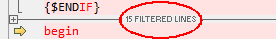

Text Editing Options
Tools > Options > Text Editing


Text Editing OptionsTools > Options > Text Editing |
|
|
These options apply to Text Compare and Text Merge sessions. Auto indent When marked and a new line is created, it is automatically indented to match the leading whitespace on the previous line. Backspace unindents When marked and the edit cursor is positioned immediately after the leading whitespace of the line, pressing the Backspace key deletes enough whitespace to match the previous indentation level, as defined by preceding lines. Allow positioning beyond end of line When marked, the edit cursor is not constrained by the end of text on a line. Initialize "Text to find" to be current word When marked and there is no selection, the current word is filled in as the search text for the Find Show filtered line counts When marked, a summary of lines hidden by display filters is shown:  Number of context lines Defines the number of matching lines to display before and after a difference section when Show Context is used. |